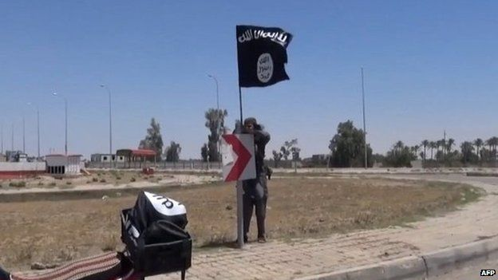

Ramadi battle: IS prepares to defend seized Iraqi city
Islamic state militants prepare to defend Ramadi against Iranian backed groups
- IS fighters have set up defensive positions
- Militants searching for and killing government supporters
- Thousands have fled the city

- 25,000 have fled in recent days, joining 130,000 who left previously
The UN says it is trying to meet the needs of those displaced, but funds are low and its stocks have almost gone.
The loss of Ramadi, the capital of the western Anbar province, is a blow for both the Iraqi government and US strategy in the area, says the BBC's Jim Muir in Beirut.
Retaking it is a massive challenge to the Iraqi government, which has had to appeal to the Shia militias despite risks of a sectarian backlash from sending them deep into the Sunni heartland, our correspondent adds.
Police and the military made a chaotic retreat from the city, which has been contested for months, after days of intense fighting.
Shia Militia Brutal
The Shia militias, known as the Popular Mobilisation (al-Hashd al-Shaabi), were key to the recapture from IS of another city, Tikrit, north of Baghdad, in April. But although their presence was welcomed by some Sunni leaders, some Ramadi residents said they feared them as much as the Islamic State fighters.
